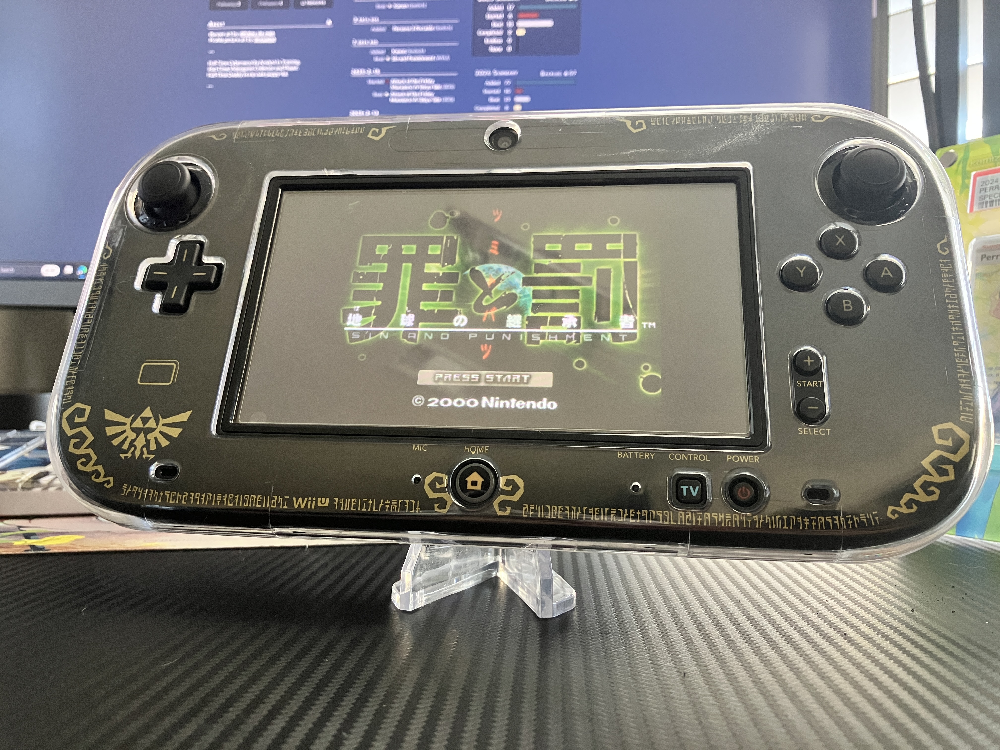

1game1week - Week 10 (3/2/25) - Sin and Punishment
It's not quite Week 10, but I'm going to be a bit busy this upcoming week and I have some free time now. So... let's pretend it's week 10! (3/5 -> 3/12)
I'm happy to have been able to keep this up for this long. If we round up a little, we're just shy of 20% of our way to the goal. (19.23%)
Since we're looking at it with that lens, we're almost through 20% with the year. Time flies when you're having fun.
I've received a few comments from friends saying they've enjoyed seeing the posts. I think I said it last post, but thank you guys for accompanying me. This is just me screaming into the ether, really.
I hope that next year I get to read other peoples' posts as well!
With that said, let's get into the games:
New games from 2/26 -> 3/4:
I'm cheating a bit here since it's in the future... Indulge me :)
* Atorie Mari + Eri ~Zarubugu no Renkinjutsushi 1-2~ (Atelier Marie and Elie ~Alchemist of Salsburg 1 and 2~) (PS2)
* Shin Rorona no Atorie: Hajimete no Monogatari ~Arando no Renkinjutsushi~ (New Atelier Rorona: Story of the Beginning ~Alchemist of Arland~) (3DS)
* Persona 3 Portable (PS4)
* Persona 3 Portable (Xbox Series X)
* Idol Janshi Suchie-Pai Saturn Tribute (Switch) [This one's not here yet, but I'm decently sure it'll get here tomorrow lol]
Currently, my backlog (https://backloggery.com/Aru_star_) is at +9 (lower is better).
And onto 1g1w. Once again, a game is considered "beaten" if I've accomplished the main objective of the game.
GAME: Sin and Punishment
PLATFORM: Wii U via Virtual Console
STARTED ON: 2/19
BEATEN ON: 2/19
TOTAL PLAYTIME: 3 hours 58 minutes
I don't think I could tell you anything that was going on with this game at any point in time. I kinda just went along with it.
Another short one.
One of the other games I bought prior to the eShop closure, if memory serves. I believe this and the Wii VC were the only times it's been released by Nintendo outside Japan.
That's not to say it's impossible to play on original hardware. All the voices were in English with Japanese subtitles for the original N64 release which is a... curious decision...
But, with a simple region unlock mod (cutting part of the cartridge tray) for a NA console, it's possible to just buy a Japanese cartridge and play the whole thing, front to back, halfway understanding the plot.
It's a fun game. I'm not even sure what to call it. On-rails shooter? It's decently short, but these kinds of games are mostly done for replayability's sake. 1cc, etc.
I might just suck, but the Wii U VC restore points ended up being a major crutch for me as I played. Surely I can go back and end up with a better score down the line, but honestly, I wasn't trying to play this for hours just to get sent back to the beginning.
Don't care! Easy game easy life!
See you next week!

Thanks for reading! If you need to contact me for any reason, please feel free to email me at aru@hoshikawa-aru.com.